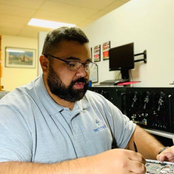

✒️ About Us
Welcome to Real Breaking News! We are dedicated to bringing
you the most outrageous and entertaining news stories from
around the world.
Our team of expert journalists
scours the globe to find the most bizarre, hilarious, and
downright unbelievable events happening every day.
👁️ Our VisionWe envision a world where news is not just informative, but also entertaining and engaging. We believe that the most unusual stories deserve to be told and celebrated. |
♥️ Our ValuesWe value creativity, curiosity, and a sense of humor. We strive to bring you stories that challenge the norm and make you think, laugh, and sometimes scratch your head in disbelief. |
🪪 Who We AreWe are a team of passionate writers and researchers who believe that news should be fun, engaging, and thought-provoking. Our goal is to provide a fresh perspective on current events and to entertain our readers with the most unusual stories. |
🎯 Our MissionOur mission is to provide a platform for sharing the most entertaining and unusual news stories, while also promoting critical thinking and skepticism in the age of information overload. |
👥 Meet the Team
Our team is made up of dedicated professionals who are
passionate about bringing you the most entertaining news
stories.
We come from diverse backgrounds, but we all
share a love for storytelling and a commitment to quality
journalism.
Mark HugginsChief Satire Engineer Leads the creation of finely-tuned fake headlines with “just enough truth to panic your aunt.” |

Ryan HugginsHead of Conspiratorial Graphics Designs all visual content — from doctored UFO footage to fake news thumbnails that “look legit, but aren't.” |
Percy WheatFact-Free Research Analyst Specializes in making up convincing-sounding sources, statistics, and obscure laws that don’t exist but probably should. |
Alan DerbyEthical Fabrication Supervisor Ensures all stories maintain a perfect balance of absurdity and plausibility, while remaining gloriously non-actionable in court. |